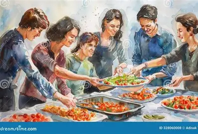

Welcome to Ubuntu Community Food Centre
Ubuntu Community Food Centre is a non-profit organisation that aims to support food-insecure families and individuals in South Africa.
Our Mission
Our mission is to help families access food and support people in need. We believe that working together can create a stronger and healthier community.
Our Community Gallery
View images that represent our community support activities.

Find Our Location
Ubuntu Community Food Centre is located at 1496 Merca Street, Extension 5, Leboeng, Tembisa, Gauteng, South Africa.
The map marker shows an approximate position on Merca Street, not a verified property entrance.